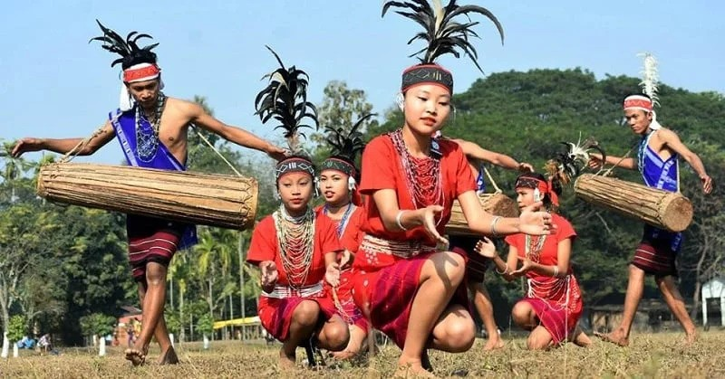
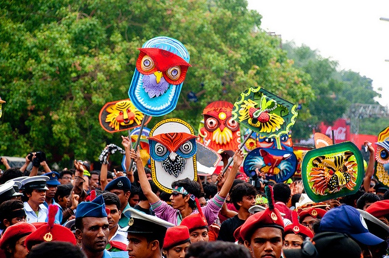

Our Culture
Bangladeshi culture is a vibrant blend of traditions, art, and spirituality, deeply rooted in its Bengali heritage. Its rich cultural tapestry includes classical music, folk songs like Baul, and intricate dance forms. Festivals such as Pohela Boishakh (Bengali New Year) and Durga Puja highlight the country's communal harmony and festive spirit. Bangladesh is also known for its exquisite handicrafts, including Jamdani sarees and terracotta art. Literature, especially the works of Rabindranath Tagore and Kazi Nazrul Islam, plays a central role in shaping national identity. The culture reflects a deep connection to nature, tradition, and community values.
 
Bangladeshi culture is a celebration of color, music, and tradition, reflecting the deep roots of Bengali identity. Poetry and literature are central, with legendary figures like Rabindranath Tagore and Kazi Nazrul Islam shaping the cultural landscape. The country’s music ranges from soulful folk traditions like Baul to classical and contemporary styles. Festivals like Eid, Pohela Boishakh, and Durga Puja bring people together in joyous celebration. Traditional foods, such as biryani and pithas, are an essential part of social gatherings. The arts, from intricate Nakshi Kantha embroidery to elaborate rickshaw paintings, showcase the creativity and spirit of the Bangladeshi people.